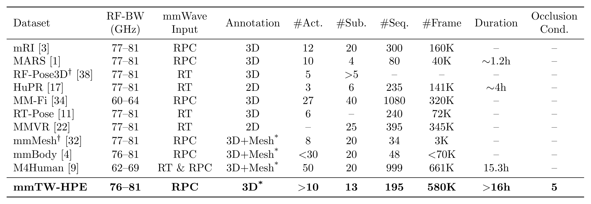
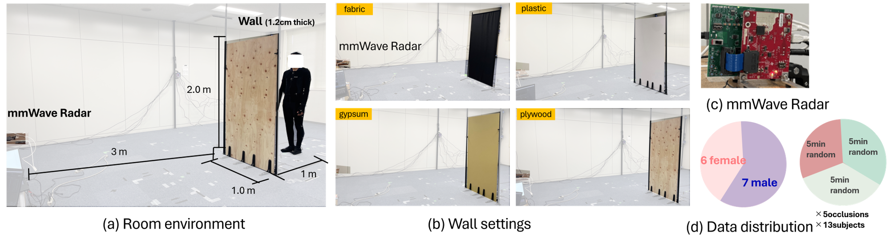
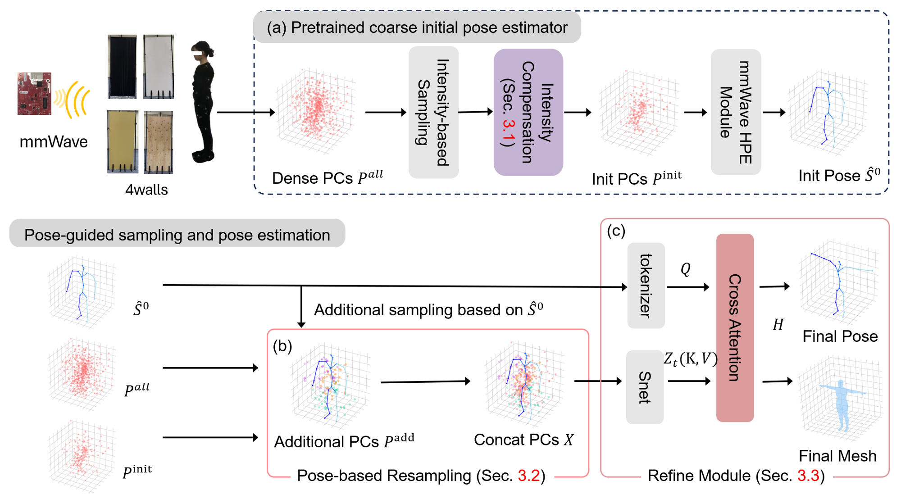
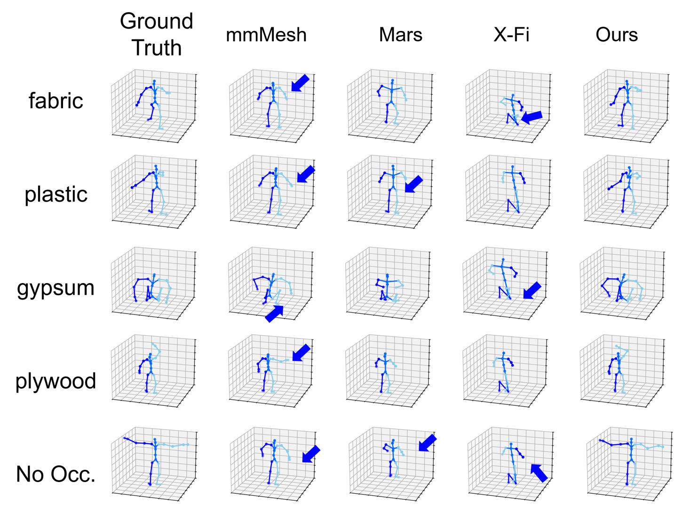

Toward Robust mmWave-Based Through-Wall Human Pose Reconstruction via Signal Attenuation Compensation and Limb Point Refinement
Abstract
Intelligent wireless sensing has attracted growing attention within the human pose estimation domain. It can address several limitations of conventional RGB camera-based systems, such as occlusion, darkness, and adverse weather. Among various wireless sensing modalities, millimeter-wave radar has gained increasing interest for human sensing through certain walls. However, existing approaches still show performance drops in through-wall settings. We find this degradation is primarily attributed to two factors: signal attenuation related to radar antenna characteristics, and under-sampling around limb regions due to intensity-based point selection. Both factors significantly impair pose estimation accuracy. To address these challenges, we propose a three-stage framework for human pose estimation from through-wall mmWave radar point clouds. The framework first compensates for signal attenuation caused by the radar radiation pattern. It then enriches limb-related point information using reliable torso coordinates. Finally, it refines the pose by combining the initial skeleton with the enriched point clouds. We also construct a through-wall mmWave radar pose dataset, mmTWHPE, with 580,000 frames and over 16 hours of data. In the experiment, the proposed method was evaluated under conditions with no occlusion and with four different types of walls, and it was found to yield significant improvements over the conventional method in nearly all cases. For example, for occlusions such as plywood and gypsum, Erot achieved an accuracy improvement of up to 60%; it also achieved an accuracy improvement of up to 35% in cases without occlusion.
Dataset: mmTW-HPE

Comparison with prior RF-based human motion datasets.
Our dataset provides cleaned mmWave point clouds with MoCap-based 3D annotations under diverse occlusions. #Act. denotes the number of representative motion types. * denotes marker-based MoCap annotations. † denotes non-public data.

The first work to tackle mmWave-based human mesh estimation under various wall materials.
Method

We tackle a novel task of robust through-wall human mesh estimation using a mmWave radar toward occlusions with diverse wall types.
(a) Intensity Compensation
Our method first applies intensity compensation to intensity-based point clouds (PCs) to obtain the Init PCs. Subsequently, an Init Pose is estimated from Init PCs.
(b) Pose-based Resampling
Next, using the body joint coordinates of the Init Pose as reference points, we perform pose-based resampling to extract point clouds corresponding to the limbs from the Dense PCs.
(c) Cross-Attention Refinement
Finally, cross-attention is applied to the combined PCs to refine the overall pose representation, including the limbs.
Results

We qualitatively evaluated reconstruction accuracy for various poses with baselines. From top to bottom, the rows correspond to the fabric, plastic, gypsum, plywood, and non-occlusion scenes, respectively. The evaluated actions demonstrated in each row from top to bottom are walking in place, twisting, squatting, waving, and T-pose. The blue arrows indicate incorrect movements.
While the baseline methods reconstruct the torso region relatively well, they struggle to estimate joint angles and maintain pose accuracy for the extremities. This improvement in hand and foot joint localization suggests that the sensitivity correction from the radar center toward the peripheral region enhanced the sampling quality of the extremities.
BibTeX
@inproceedings{nakajima2026mmWavePose,
title = {Toward Robust mmWave-Based Through-Wall Human Pose Reconstruction via Signal Attenuation Compensation and Limb Point Refinement},
author = {Nakajima, Yoko and Oumi, Yusuke and Yang, Dixin and Mori, Shohei and Isogawa, Mariko},
booktitle = {Proceedings of the 18th Asian Conference on Computer Vision (ACCV)},
year = {2026}
}